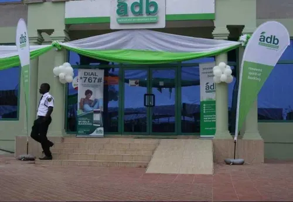
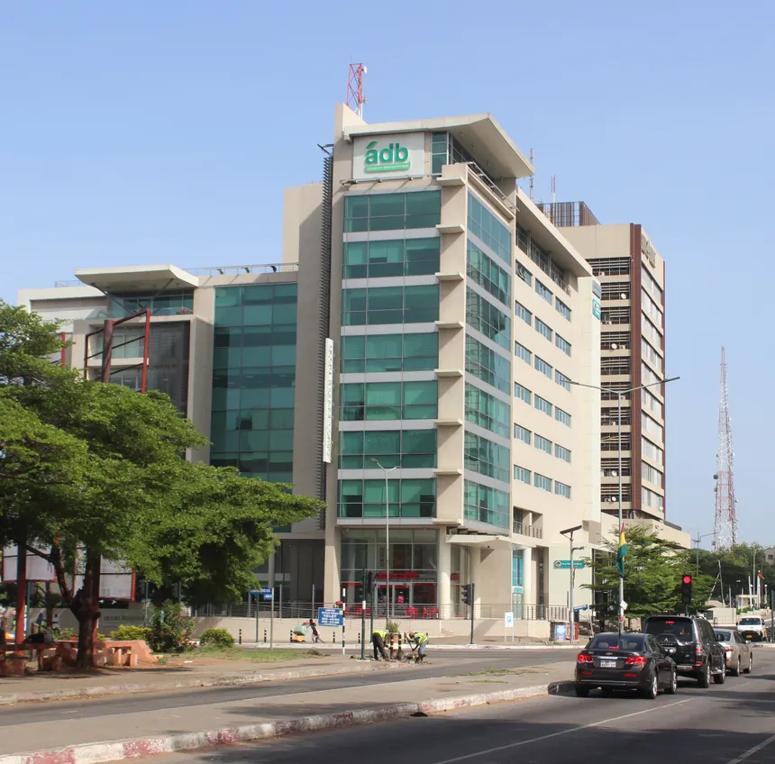
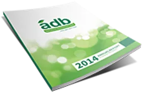

The History of Agriculture Development Bank
well come with me as we ready through the history ADB and it achievements sine it establishment
Establishment
Agricultural Development Bank of Ghana, commonly known as
Agricultural Development Bank or ADB, is a government-owned
development and commercial bank in Ghana. The bank is the first
development finance institution established by the Government of
Ghana. It is the developmental finance institution that provides
technical and financial services to agribusiness, farmers, and
other enterprises at the rural communities. It is one of the
commercial banks licensed by the Bank of Ghana, the national
banking regulator. The main objective of the bank is promoting and
financing of agribusiness in the country. ADB was established in
1965, by the Act of Parliament (Act 286) as the Agricultural
Credit and Cooperative Bank. This is to meet the banking needs of
the Ghanaian agricultural sector in a profitable manner. The bank
started operations from a building on Tunisia Road, West Ridge -
Accra. The bank changed its name in 1970 when the parliamentary
statute was amended to grant the institution full commercial
banking powers. In 1967, the National Liberation Council (NLC
Decree 182) renamed it from the Agricultural Credit and
Cooperative Bank to the Agricultural Development Bank, and amended
key sections of the Establishing Act, Act 286. By 1990, the bank
became more diversified and added international banking and trade
services to its growing product portfolio. The bank obtained the
Universal Banking license and broadened its services in 2004. In
2011 the branch network of the bank expanded from 55 to 78
branches across the country, with fully networked branches running
on an ICT platform. Around the same time, the bank introduced the
ADB Visa Classic Card, allowing cardholders to transact business
anywhere in the world.
Achievements
Products and services The bank engages in other types of banking
in addition to making agricultural loans. The range of services
offered include development banking, corporate banking, personal
banking, international banking, diaspora banking services,
treasury management services, and money transfer services, in
partnership with Western Union. Branch network The bank maintains
a network of 85 branches located in all areas of Ghana. Awards and
recognition 2020 Ghana Cocoa Awards - Best Cocoa Financing
Institution


